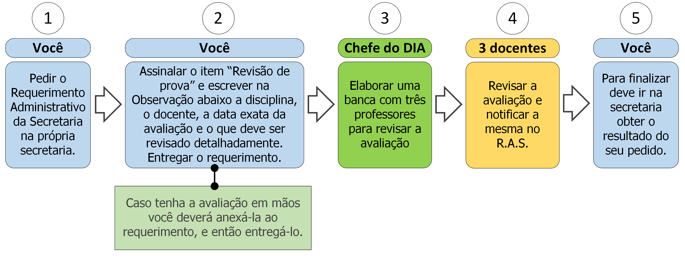

12. Revisão de Prova

12.1 Descrição
Ao discordar da correção de uma avaliação você pode requerer uma revisão na correção da mesma. Para isso você deve seguir os seguintes passos:
- A. Peça o Requerimento Administrativo da Secretaria;
- B. Assinale o item “Revisão de Prova” e escreva no campo Observação a data da avaliação, o nome do docente e o que deve ser revisado detalhadamente. Caso a avaliação esteja em sua posse deve anexá-la no requerimento (ver documentos na seção 12.2);
- C. Entregue o requerimento;
- D. O chefe do Departamento de Informática Aplicada formará uma banca com três professores para revisar o que foi requerido no passo B;
- E. Os três professores reavaliarão o que foi requerido no passo B e então notificarão o parecer no requerimento;
- F. Vá à secretaria e procure saber sobre o resultado do seu requerimento (ver regra 1 na seção 12.3).
- Condição: Este processo deve ser utilizado como último recurso, apenas no caso de não haver acordo entre o professor e o aluno.
12.2 Documentos necessários
- A avaliação em questão. Caso a mesma esteja na posse do requerente ele deverá anexá-la ao requerimento na solicitação. Caso a mesma esteja na posse do docente ela será providenciada para revisão pela banca.
12.3 Regras
- 1. Prazo de efetivação: A Secretaria, o chefe do Departamento de Informática Aplicada os três docentes que compõe a banca de revisão têm até 7 dias úteis para efetivar a revisão da avaliação.